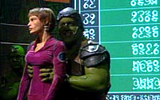
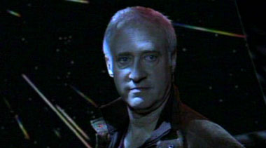
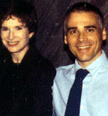
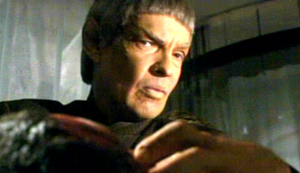
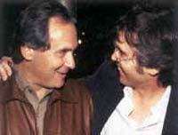

|

Clique aqui
para visitar o
Acervo de colunas


| Finalmente o que queríamos
Acredite se quiser, não há contradição. A boa notícia é que a série está melhor do que nunca. A má é que isso está me fazendo lamentar ainda mais do que o normal pelo seu potencial cancelamento. Faz algum tempo que tenho ruminado nesse espaço os motivos pelos quais Enterprise provavelmente está condenada. Então, mais fácil do que reescrever tudo é apenas citar uma coluna anterior. "A verdade é que o público comum --aquele não composto por fãs ultra-especializados e que perfaz a grande audiência dos canais de televisão-- simplesmente não agüenta mais Jornada nas Estrelas. São duas décadas de produção ininterrupta, com vários anos de exibição simultânea de até duas séries diferentes! Com ou sem Jornada nas Estrelas no nome, ninguém em sã consciência pode acreditar, mesmo num nível subconsciente, que uma nova produção baseada nesse universo ficcional tenha um propósito criativo, em vez de ser mais um caça-níqueis de uma empresa que quer sugar uma marca até sair o último centavo. Ninguém hoje acredita que Jornada nas Estrelas tenha uma justificativa para continuar sendo produzida. Caso isso seja verdadeiro (e acho que a audiência parece demonstrar o fato semana após semana), não há nada que Rick e Brannon possam fazer com Enterprise para torná-la um sucesso. Ela está realmente condenada." Essa foi exatamente a percepção de Rick Berman e Brannon Braga, os criadores e chefões da série. Ao final da terceira temporada, com índices abismais de audiência e uma renovação empurrada na marra pela Paramount a fim de conseguir episódios suficientes para entrar no mercado de syndication, os dois simplesmente saíram de cena. Para a quarta temporada, não havia mais por que se preocupar com audiência, sucesso, fracasso, boas histórias, más histórias --o cancelamento era uma certeza. Então, nada mais natural que sair de fininho, deixando o mico nas mãos de outra pessoa. E a bomba ficou com Manny Coto. Escritor talentoso e fã incondicional de Jornada nas Estrelas, Coto foi trazido a bordo na terceira temporada, e acabou demonstrando seu talento em alguns dos melhores episódios daquele ano. Por conseqüência, foi "eleito" o tocador da quarta e (supostamente) última temporada. Como ele próprio descreveu, foi como deixar uma criança sozinha na loja de doces. Com total liberdade criativa, Coto podia fazer de Enterprise o que bem entendesse. Para começar, resolveu eliminar a mais odiosa das idéias que B&B haviam imposto à série --a Guerra Fria Temporal. Não me entenda mal; acho que esse conceito poderia ter funcionado, se os produtores tivessem dado a ele o devido crédito. O problema é que o negócio sempre foi tratado como um "instrumento de enredo", não um real arco em evolução. Resultado: Coto decidiu terminar com essa fraude, no episódio duplo "Storm Front". Minha opinião é a de que esse segmento não é melhor do que todo o resto da Guerra Fria Temporal, exceto por uma coisa: ele a termina. Desde que os primeiros rumores da quarta temporada começaram a circular, sempre considerei "Storm Front" como o proverbial "mal necessário" --a via sacra que teríamos de passar para chegar ao verdadeiro início da nova temporada (e nova era) de Enterprise. O real ímpeto de Coto só começa a ser sentido em "Home". A NX-01 está de volta à Terra, sendo reformada e atualizada para retomar sua missão, após salvar o planeta da ameaça Xindi. Archer tem a chance de refletir sobre suas atitudes, e T'Pol vai a Vulcano, visitar sua mãe. Um belo começo, mas nada perto do que ainda estaria por vir. Coto institui um esquema de arcos, com três episódios em cada história. É um formato totalmente novo para Jornada nas Estrelas e um que faz todo o sentido para uma série que se propõe a ser a "base histórica" para o mundo de Kirk e Spock no século 23.   Três episódios depois, e eu já estava convencido de que Enterprise finalmente tinha algo a oferecer à história de Jornada. Mas Coto ainda tinha mais para nós. Próxima parada: Vulcano.   Enquanto esses episódios estavam sendo exibidos nos EUA, os fãs já acompanhavam os rumores do que viria a seguir. Depois de dois "bottle shows" individuais (produzidos para economizar custos e filmados totalmente a bordo da NX-01), a série retomaria o esquema de arcos com um enredo mais do que especial. Os humanos promovem uma conferência de paz entre Telaritas e Andorianos, que é atrapalhada quando os Romulanos constroem uma rede de intrigas entre essas duas raças beligerantes. Cabe a Archer encontrar uma saída para unir as espécies contra o inimigo comum --esforço que envolverá uma passagem por Andoria, mundo jamais visto em Jornada. E quando você já se vê babando por esses segmentos, descobre-se que, na seqüência, você embarcará num outro arco de três episódios que irá mostrar o que aconteceu para que os Klingons da Série Clássica tivessem testas lisas, enquanto promoverá o primeiro contato dos humanos com os Rigelianos, mencionados na série original mas nunca vistos. É mole, ou quer mais? Se quiser mais, há rumores de que estão fechando um acordo para ter William Shatner reprisando seu papel como capitão James T. Kirk em um outro arco de três episódios --talvez até para concluir a temporada. E Coto já diz que tem uma idéia ótima para fechar a série com a fundação da Federação. Enquanto os fãs ouvem tudo isso, o único pensamento que ecoa é: não podem cancelar esta série! Não agora que ela encontrou sua voz, sua razão de ser! Desde que Enterprise foi ao ar, nunca os fãs pareceram tão unidos e de acordo no que diz respeito à qualidade do programa. Há poucos agora que torcem pelo seu cancelamento. Mas é de se perguntar se já não é tarde demais.  Quando o primeiro episódio do arco Vulcano foi ao ar, pensei que eles pudessem ter razão. Mas quando a trilogia foi concluída com a melhor audiência do ano obtida pela série e mais de 500 mil telespectadores acima de "Storm Front", comecei a pensar que talvez as mesmas coisas que atraiam os fãs também conquistem a audiência regular. Só que é preciso lembrar que Enterprise é uma série caríssima, sendo exibida no pior horário da TV americana --as noites de sexta-feira. Embora pela primeira vez desde as primeiras temporadas de Deep Space Nine estejamos vendo uma seqüência (ainda que modesta) de incrementos aos índices de audiência, dificilmente eles serão suficientes para justificar uma quinta temporada. Torcer não custa nada. E preciso admitir que nunca torci tanto pelo futuro de Enterprise. E, caso Manny Coto consiga o impossível e vença esse teste do Kobayashi Maru, a Paramount precisará refletir muito acerca de como Jornada nas Estrelas tem sido administrada por seus produtores nos últimos anos. Alguma coisa está muito próxima do fim. Provavelmente será a produção televisiva da franquia. Mas, com alguma sorte, serão os empregos dos antigos encarregados. Vida longa e próspera, Manny. |
 Esta
é uma coluna que já estou para escrever há
várias semanas. Fiz o possível para esperar,
na esperança de não emitir julgamentos prematuros.
Mas, a essa altura, dá para dizer com segurança
que tenho uma boa e uma má notícia para os fãs:
Manny Coto consertou Enterprise.
Esta
é uma coluna que já estou para escrever há
várias semanas. Fiz o possível para esperar,
na esperança de não emitir julgamentos prematuros.
Mas, a essa altura, dá para dizer com segurança
que tenho uma boa e uma má notícia para os fãs:
Manny Coto consertou Enterprise.